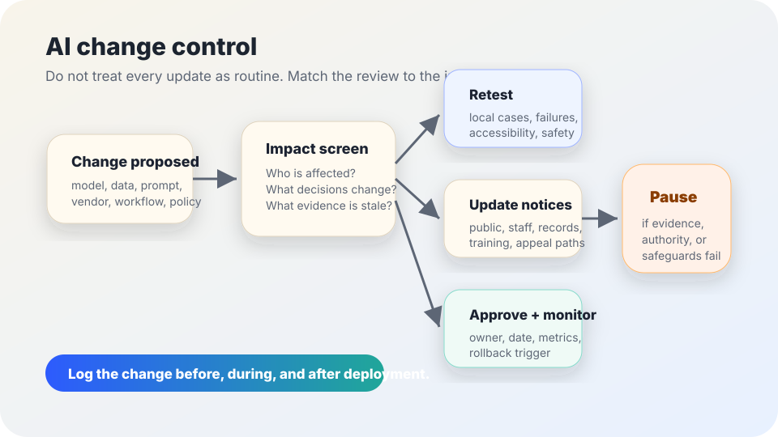

AI governance and safe updates
AI change control checklist.
A lightweight review for deciding when a model, vendor, workflow, data, prompt, integration, or policy change needs retesting, updated notices, records review, approval, monitoring, or a pause.
The short answer
AI change control is the habit of asking, before an update goes live: what changed, who is affected, what evidence is now stale, what notices or records must change, who approves the risk, and how we will notice if the update fails.
Not every change needs a committee. A typo fix in a staff prompt is different from a new vendor model, a new data source, or a workflow that now affects eligibility, discipline, benefits, hiring, safety, language access, or public services. The point is to match the review to the impact instead of treating every update as either harmless or impossible.

Why AI changes need special attention
NIST’s AI Risk Management Framework describes AI risk management as a lifecycle activity: teams govern, map, measure, and manage systems over time. NIST Special Publication 800-53 includes configuration management controls because system changes can affect security and accountability. OMB Memorandum M-24-10 also requires ongoing governance, testing, monitoring, and risk management for covered federal AI uses, especially where rights or safety may be affected.
For civic teams, the lesson is practical: an AI system can become a different risk without changing its name. A model upgrade, prompt rewrite, integration, vendor policy change, data-source expansion, automation threshold, or public-facing script can alter who is affected and what safeguards are needed.
Changes that should trigger review
Model or vendor
Model version, provider, hosting location, subprocessor, contract term, data-use setting, or vendor safety feature changes.
Data or records
New data source, larger upload type, longer retention, changed deletion path, new log, export, legal hold, or records schedule question.
Prompt or policy
System prompt, rubric, policy instruction, escalation rule, refusal behavior, style guide, or staff script changes.
Workflow or automation
The tool moves from drafting to deciding, from optional to required, from internal to public, or from human review to lower supervision.
Integration or access
New API, plug-in, service account, single sign-on group, document connector, browser extension, or access role changes.
People affected
The system expands to a new program, school, office, language group, public-facing service, or population with higher stakes.
Use the lightest review that fits the risk
| Review level | Use when | Minimum action |
|---|---|---|
| Level 1: log only | Low-risk wording, formatting, or documentation changes that do not affect data, outputs, access, people served, or decisions. | Log what changed, who made it, date, reason, and rollback path. |
| Level 2: quick retest | Prompt, rubric, staff script, form, or internal workflow changes may alter output quality or user behavior. | Run local test cases, check known failure examples, update staff instructions if needed, and monitor first use. |
| Level 3: governance review | Data sources, retention, access, vendor settings, public notices, appeal paths, or affected populations change. | Review privacy, security, accessibility, records, notice, human review, and risk-register entries before release. |
| Level 4: pause or reapprove | The change affects rights, safety, eligibility, benefits, discipline, hiring, health, legal, public-service access, or a previously accepted risk. | Pause expansion or deployment until owners approve evidence, safeguards, monitoring, rollback, and communication. |
Ten questions before the change goes live
- What exactly changed, and what did not change?
- Does the change affect data collection, upload, retention, export, deletion, logging, or vendor use?
- Does it affect who can access the system, outputs, integrations, or admin settings?
- Does it affect public notices, consent or disclosure language, staff scripts, training, or appeal paths?
- Does it affect accessibility, language access, bias risk, privacy, security, or records obligations?
- Which previous tests, evaluations, benefits claims, or risk ratings are now stale?
- What local examples, edge cases, known failures, and user journeys were retested?
- Who owns approval, who can rollback, and who can pause the workflow if something goes wrong?
- What monitoring signal will be checked after release, and by what date?
- What will be communicated to staff, affected people, vendors, help desks, or public users?
Copy-paste change log
Keep the log concise. Link to restricted evidence or credential inventories rather than pasting secrets, private logs, personal data, API keys, or vendor-confidential details into a broadly shared document.
Stop rules
- Do not ship a change when no one can explain what changed or who can roll it back.
- Do not treat a vendor model or policy update as harmless if it changes data use, output behavior, safety settings, integrations, or subprocessors.
- Pause expansion when the change affects rights, safety, benefits, discipline, hiring, health, legal status, or public-service access and local testing has not been refreshed.
- Pause when notices, appeal paths, retention rules, accessibility supports, or staff training would become inaccurate after the change.
- Do keep the process proportionate: small low-risk changes should be easy to log, and high-impact changes should be hard to hide.
Related field-guide pages
Sources
- NIST — AI Risk Management Framework.
- NIST — Security and Privacy Controls for Information Systems and Organizations, SP 800-53 Rev. 5, especially configuration-management concepts used here as a general change-control reference.
- Office of Management and Budget — Memorandum M-24-10, Advancing Governance, Innovation, and Risk Management for Agency Use of Artificial Intelligence.
- CISA — Secure by Design.
- OWASP — Top 10 for Large Language Model Applications (used here for practical caution about LLM application risks, not as a complete governance framework).
This guide is public education, not legal, security, procurement, or compliance advice. Local rules may require stronger approvals, documentation, accessibility review, security review, public notice, or records handling.